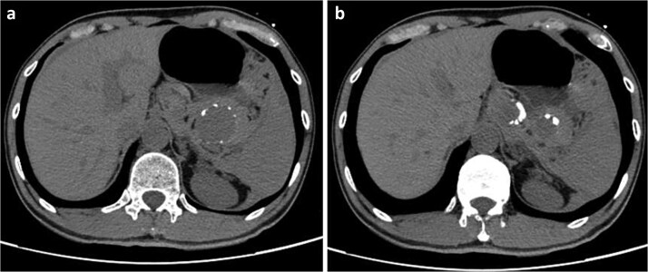
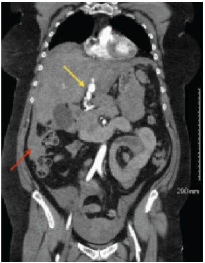
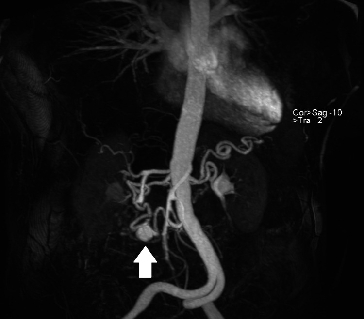
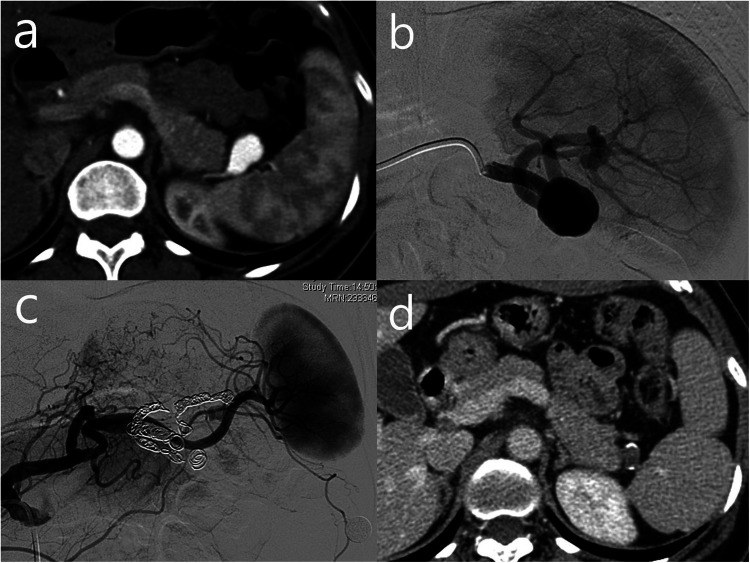
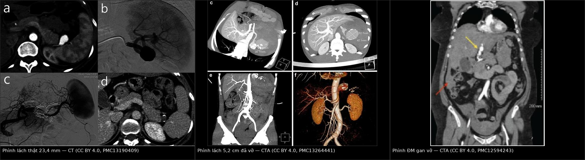
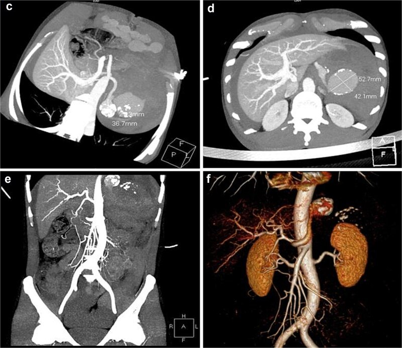
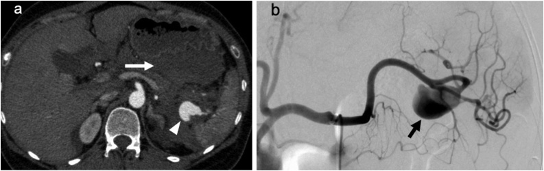
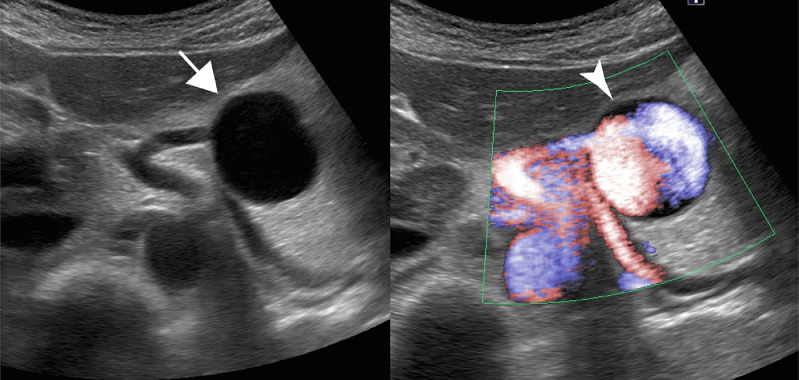

1912 — Phình động mạch tạng (lách, gan, thân tạng, SMA, tá tụy–tá tràng): ngưỡng can thiệp và cạm bẫy "giả nang tụy" / Visceral artery aneurysms — size thresholds, pregnancy and pitfalls
Tags: pattern:phinh-mach pattern:vo-mach vung:dong-mach-tang vung:lach vung:gan score:SVS-2018 protocol:CTA-3-thi incidentaloma:phinh-dong-mach-tang
Mức chắc chắn (certainty): tổng hợp y văn (literature synthesis) — ghép 4 nguồn mở: tổng quan hệ thống về bệnh nguyên – diễn tiến tự nhiên – điều trị VAA (Cardiovasc Diagn Ther 2026, PMC13554317, CC BY-NC-ND), tổng quan VAA ở thai và phụ nữ tuổi sinh đẻ (Medicina 2026, PMC13118104, CC BY), đoàn hệ nút mạch phình lách 64 bệnh nhân/66 ca (Front Surg 2026, PMC13190409, CC BY) và đoàn hệ nút mạch 97 phình tạng thật (CVIR Endovasc 2025, PMC12950147). Ca minh họa là ca nguyên văn của từng bài gốc (ghi rõ Fig/PMCID); số nào nguồn không nêu ghi "chưa rõ".
Câu chốt: ngưỡng can thiệp của phình tạng không phải một con số duy nhất — nó phụ thuộc bản chất thành mạch (thật/giả), vị trí, thai kỳ và tốc độ lớn. Giả phình: can thiệp ngay bất kể kích thước. Phình lách thật: theo dõi tới 2–2,5 cm; can thiệp khi > 3 cm hoặc lớn > 0,5 cm/năm; nhưng ở phụ nữ tuổi sinh đẻ/mang thai — can thiệp ở MỌI kích thước, vì vỡ trong tam cá nguyệt III có tử vong mẹ ~75–80% và thai > 90%.
1. Tổng quan bệnh học – cơ chế hình ảnh
1.1 Vì sao "thành mạch" quan trọng hơn "đường kính" (TẠI SAO)
- Phình thật (true aneurysm) = giãn cả 3 lớp thành mạch do thoái hóa lớp áo giữa (medial degeneration) — xơ vữa, tăng huyết áp, rối loạn mô liên kết (Marfan, Ehlers–Danlos, loạn sản cơ trung mạc — FMD), viêm mạch, tăng áp lực cửa (phình lách). Thành còn đủ lớp nên diễn tiến chậm: tốc độ lớn ~0,06–0,6 mm/năm (PMC13554317).
- Giả phình (pseudoaneurysm) = mất toàn bộ thành, túi là máu tụ được bao bọc quanh chỗ rách nội mạc. Vì không có cơ trơn giữ, túi không có "trần" giãn nở → nguy cơ vỡ cao bất kể đường kính, cần can thiệp cấp (PMC13554317, PMC13118104). Bệnh nguyên điển hình: viêm tụy, viêm túi mật, chấn thương, ERCP, mổ gan/tụy, nhiễm khuẩn (mycotic).
- Vì sao đường kính vẫn quan trọng: theo định luật Laplace (sức căng thành ∝ áp lực × bán kính), cùng một áp lực thì túi lớn hơn chịu sức căng lớn hơn → nguy cơ vỡ tăng theo đường kính. Đây là cơ sở của các ngưỡng 2 cm – 3 cm bên dưới, nhưng Laplace không tính tới chất lượng thành — nên một túi 1,2 cm ở người viêm tụy (giả phình) nguy hiểm hơn túi 2,5 cm vôi hóa viền ở người già.
- Vì sao thai kỳ làm vỡ: tăng thể tích tuần hoàn và cung lượng tim, estrogen/progesterone/relaxin làm yếu mô liên kết thành mạch, tử cung to chèn ép – đẩy lệch mạch, và tuần hoàn tăng động — cộng dồn ở tam cá nguyệt III (PMC13118104). Vì vậy ~25% phình lách được phát hiện trong thai kỳ và phần lớn vỡ ở 3 tháng cuối (PMC13554317).
1.2 Vì sao nhìn thấy trên hình ảnh (vật lý từng chuỗi)
- CTA thì động mạch (25–35 giây) là chuẩn: lòng túi phình ngấm thuốc đồng thì và đồng đậm độ với động mạch chủ (cùng nồng độ iod trong lòng), nên túi thật hiện thành cấu trúc "túi" thông với lòng mạch. Đây là điều cửa sổ không cản quang không thể làm được.
- Huyết khối trong túi (mural thrombus) không ngấm thuốc → thấy "lòng ngấm thuốc nhỏ hơn kích thước túi"; phải đo đường kính ngoài – ngoài (outer-to-outer) trên CTA/không cản quang, vì đo lòng ngấm thuốc làm đánh giá thấp nguy cơ vỡ.
- Vôi hóa viền (rim/shell calcification) là di chứng xơ vữa ở thành — gặp nhiều ở phình lách, thấy rõ trên X-quang/CT không cản quang dưới dạng vòng cung vôi hóa. Vôi hóa KHÔNG phải "hàng rào bảo vệ": túi vôi hóa viền vẫn vỡ (PMC13554317).
- Vì sao CT không cản quang dễ nhầm thành nang: túi phình huyết khối hóa toàn bộ hoặc đang bị máu tụ vây quanh có đậm độ gần dịch + viền vôi hóa → trông như nang giả tụy/nang lách. Chỉ thì động mạch mới phân biệt được "nang" với "túi thông lòng mạch". Ca nguyên văn: nam 49 tuổi đau thượng vị trái đột ngột, CT không cản quang đọc là nang giả tụy, sau đó sụp tuần hoàn do "vỡ hai lần", CTA cấp cứu mới ra phình lách khổng lồ 5,2 cm đã vỡ (PMC13264441).
- Siêu âm: Doppler màu cho dòng xoáy "yin-yang" trong túi — dấu hiệu có giá trị nhất khi không được CT (thai phụ); nhưng phụ thuộc người làm, thành bụng và tử cung to (PMC13118104). Ca nguyên văn: phình lách ở thai phụ thấy túi thông với động mạch lách + tín hiệu dòng vào trên Doppler màu → được nút mạch chủ động trong thai kỳ (PMC7644823).

Hình 1 — Cạm bẫy kinh điển. CT không cản quang: hai "tổn thương nang" đậm độ thấp, viền vôi hóa, ở thượng vị trái; tổn thương lớn 52 × 44 mm sát đuôi tụy → bị đọc là nang giả tụy. Bệnh nhân sau đó sụp tuần hoàn; CTA cấp cứu (Hình 5) chứng minh phình lách khổng lồ đã vỡ. Nguồn: J Surg Case Rep 2026 (PMC13264441), CC BY 4.0.1.3 Ngưỡng định lượng nằm lòng (bắt buộc nhớ)
| Chỉ số | Con số | Nguồn |
|---|---|---|
| Tỉ lệ lưu hành VAA (tử thiết/chẩn đoán hình ảnh) | 0,01–0,2%; nguồn khác 0,1–2% | PMC13554317, PMC13118104 |
| Tử vong khi VAA vỡ (chưa điều trị) | 25–75% | PMC13554317 |
| Phình lách (SAA) trong tổng số VAA | 60–80%, nữ/nam 4:1, ~25% phát hiện trong thai kỳ | PMC13554317 |
| SAA vỡ trong thai: tử vong mẹ / thai | ~75–80% / > 90%; hầu hết ở tam cá nguyệt III | PMC13554317, PMC13118104 |
| SAA là nguyên nhân tử vong mẹ (Úc 1997–2017) | 9/449 ca (2%) | PMC13118104 |
| Ngưỡng can thiệp SAA thật, không triệu chứng | > 3 cm (grade II, level C) hoặc lớn > 0,5 cm/năm | PMC13554317 |
| Ngưỡng theo dõi an toàn SAA | < 2–2,5 cm, tốc độ lớn 0,06–0,6 mm/năm | PMC13554317 |
| Phình gan (HAA) | 20% VAA, nam/nữ 3:2, nguy cơ vỡ 14–80%; can thiệp khi > 2 cm hoặc lớn > 0,5 cm/năm | PMC13554317 |
| Phình thân tạng | 4–5% VAA; vỡ 10–20%, tử vong sau vỡ ~50%; can thiệp khi > 2 cm (theo dõi nếu < 30 mm) | PMC13554317, PMC13118104 |
| Phình SMA | 6,7–6,9% phình tạng; vỡ 38–50%, tử vong 30–90%; can thiệp mọi kích thước (grade 1A) | PMC13554317 |
| Phình GDA / PDA | 1–4% / < 2% VAA; nguy cơ vỡ tới 75%; thường kèm hẹp–tắc thân tạng | PMC13554317 |
| Phình thận | 0,1–1% dân số (tới 2,5% ở người tăng huyết áp/chụp mạch); vỡ < 5%** khi không triệu chứng – không thai; can thiệp **> 3 cm, hoặc mọi kích thước nếu có triệu chứng/vỡ/phụ nữ tuổi sinh đẻ | PMC13554317 |
| Phình thận trong thai | Tử vong mẹ 5,1%, thai 38% (tới 85%) | PMC13118104 |
| Ngưỡng cho thai / phụ nữ tuổi sinh đẻ | Can thiệp mọi phình thật, bất kể kích thước (SVS 2020, ESVS 2025, CIRSE 2024) | PMC13118104 |
| Giả phình | Can thiệp bất kể kích thước và triệu chứng; tử vong nếu không điều trị tới ~90% | PMC13554317, PMC13118104 |
| Liều thai nhi 1 lần CTA bụng | < 25 mGy** (ngưỡng quái thai **> 100 mGy) | PMC13118104 |
| Nút mạch vs mổ (meta 4.447 ca) | Tử vong 1,8% vs 2,1%; biến chứng nặng 5,6% vs 8,4% (OR 0,61); nằm viện –4,3 ngày | PMC13554317 |
| VAA vỡ: nút mạch vs mổ | Tử vong 4,1% vs 31%; tái can thiệp 1 năm 9% vs 5% | PMC13554317 |
| Kỹ thuật nút mạch VAA (643 ca) | Thành công 93,2%; giữ tưới máu đầu xa 99,3%; biến chứng nặng 3,5%; tử vong 30 ngày 1,5% | PMC13554317 |
| Nút mạch phình lách (66 ca) | Thành công kỹ thuật 100%, thành công lâm sàng 94,1%; nhồi máu lách 37,5% | PMC13190409 |
| Nút mạch phình tạng thật (97 ca) | Thành công 100%; biến chứng nặng chu phẫu 5,2%; sống 5 năm 89,4%; tái tưới túi 8,2% | PMC12950147 |
2. Mẫu hình + chẩn đoán phân biệt theo vị trí (gamut)
Mẫu hình cần nhận ra: "vòng/vòm ngấm thuốc" nằm sát một động mạch, đồng đậm độ với động mạch chủ ở thì động mạch, thường không có nhu mô bao quanh (khác u), có thể vôi hóa viền, ± huyết khối không ngấm thuốc trong túi. Phát hiện tình cờ khi chụp bụng vì lý do khác là thể phổ biến nhất.
Gamut theo vị trí (mnemonic "LÁCH – GAN – THÂN TẠNG – RUỘT – THẬN"):
- LÁCH (động mạch lách, nhất là đoạn đuôi tụy – rốn lách): phình thật do xơ vữa/tăng áp cửa/FMD/thai; giả phình sau viêm tụy; rò động mạch lách – tĩnh mạch lách (tăng áp cửa, thổi liên tục); phình trong ống sống? không — nhưng nhớ phình lách là VAA hay gặp nhất và là nguyên nhân tử vong mẹ đã ghi nhận.
- GAN (động mạch gan chung/riêng, 20% VAA): thật do xơ vữa; giả phình sau ghép gan/ERCP/chấn thương/mổ đường mật — vỡ vào đường mật gây ho ra máu tiêu hóa / tam chứng Quincke (đau hạ sườn phải + vàng da + xuất huyết tiêu hóa).

*Hình 2 — Nữ 57 tuổi, đau bụng và tụt huyết áp: CTA ngực–bụng–chậu thấy phình động mạch gan trái nhiều thùy (bilobed) (mũi tên vàng) và máu tự do trong ổ bụng (mũi tên đỏ) — phình gan vỡ có nguy cơ vỡ 14–80%, tử vong cao nếu không nút mạch/mổ ngay. Nguồn: Clin Pract Cases Emerg Med 2025 (PMC12594243), CC BY 4.0.* 3. THÂN TẠNG – TÁ TỤY/TÁ TRÀNG (GDA/PDA): thường hệ quả của hẹp–tắc thân tạng: dòng bù qua cung tá tụy–tá tràng làm phình nhánh bù, vỡ tới 75%. Bẫy: nút mạch mà không tái thông thân tạng → thiếu máu gan/ruột (PMC13554317).
Hình 3 — MIP thì động mạch: túi phình động mạch tá tụy–tá tràng (mũi tên) với dòng ngấm ngược vào động mạch gan, động mạch lách và các nhánh thân tạng qua bàng hệ từ SMA, kèm tắc thân tạng đoạn dài không còn lỗ nguyên ủy. Đây là "phình do dòng bù" — điều trị phải tính cả hẹp/tắc thân tạng, nếu chỉ nút túi sẽ làm thiếu máu gan. Nguồn: Cureus 2025 (PMC12809103), CC BY 4.0. 4. RUỘT (SMA, nhánh hỗng tràng/jejunal): SMA can thiệp mọi kích thước; nhánh hỗng tràng > 2 cm; nguy cơ vỡ 38–60%, tử vong cao; thường phát hiện khi đau bụng hoặc xuất huyết tiêu hóa ồ ạt. 5. THẬN: > 3 cm, hoặc mọi kích thước ở phụ nữ tuổi sinh đẻ; bắt buộc tầm soát FMD (bài 850) và tăng huyết áp; can thiệp thường bằng stent-graft để giữ nhánh. 6. NHIỀU Ổ / KHÔNG ĐIỂN HÌNH: SAM (loạn sản cơ trung mạc từng đoạn) và FMD — phình/bóc tách nhiều ổ; mycotic — túi sùi, thâm nhiễm mỡ, sốt, có ổ nhiễm; viêm mạch (PAN, Takayasu, Behçet).
Hình 4 — Nữ 51 tuổi, phình lách thật 23,4 mm ở động mạch lách đoạn xa, thể tích lách trước can thiệp 194 mL: (a) CT thì động mạch — túi saccular cạnh rốn lách; (b) DSA — hai nhánh xa xuất phát từ chính túi (yếu tố quyết định kỹ thuật); (c) nút "trapping" bằng coil cả đầu vào và đầu ra; (d) CT 7 ngày sau — lách còn ngấm thuốc, không nhồi máu lớn. Bài học: vị trí xa/rốn lách làm tăng nguy cơ nhồi máu lách sau nút (37,5% — PMC13190409). Nguồn: Front Surg 2026 (PMC13190409), CC BY 4.0.3. Bảng so sánh phân biệt (ma trận đối chiếu)
| Thực thể (entity) | Hình ảnh điển hình (CTA thì động mạch) | Chốt vào (rule-in) | Chốt loại (rule-out) | Gợi ý xác nhận |
|---|---|---|---|---|
| Phình lách thật | Túi ngấm thuốc đồng thì ĐMC ở động mạch lách, ± vôi hóa viền, ± huyết khối trong túi; hay ở đoạn thân/đuôi | Túi thông lòng mạch + vôi hóa viền + bệnh nền (tăng áp cửa, thai, FMD) | Không thấy túi thông lòng trên mọi thì → không phải phình | CTA; siêu âm Doppler (yin-yang); đo đường kính ngoài–ngoài |
| Giả phình sau viêm tụy | Túi không đều, cổ hẹp, thâm nhiễm mỡ/dịch tụy quanh, ± máu tụ; thường động mạch lách/gan/GDA | Bối cảnh viêm tụy/ERCP/chấn thương + túi sùi + không có 3 lớp thành | Thành đều, vôi hóa viền, không bệnh cảnh viêm → phình thật | CTA; can thiệp ngay, không chờ kích thước |
| Nang giả tụy / nang lách | Đậm độ dịch, viền vôi hóa, không ngấm thuốc ở MỌI thì, không thông lòng mạch | Vị trí trong/quantụy + tiền sử viêm tụy; không ngấm thì động mạch | Ngấm thuốc đồng thì ĐMC → là phình, không phải nang | CTA (không dựa CT không cản quang); theo dõi ≥ 6 tuần |
| Rò động mạch lách – tĩnh mạch lách | Tĩnh mạch lách/ cửa ngấm thuốc SỚM ở thì động mạch, tĩnh mạch giãn, ± phình | Ngấm thuốc tĩnh mạch thì động mạch + tăng áp cửa | Không có ngấm sớm tĩnh mạch → chỉ phình đơn thuần | CTA 2 thì; đo áp lực cửa |
| Phình GDA/PDA do hẹp thân tạng | Túi ở cung tá tụy–tá tràng, kèm hẹp/tắc gốc thân tạng, động mạch tá tụy giãn | Tắc thân tạng + túi ở nhánh bù | Thân tạng thông tốt, không giãn nhánh bù | CTA dựng MIP; điều trị cả hẹp thân tạng |
| Phình gan (HAA) | Túi ở động mạch gan chung/riêng, ± vôi hóa; giả phình sau can thiệp ở miệng nối | > 2 cm hoặc lớn nhanh; giả phình = cấp cứu | Túi nhỏ < 2 cm, không triệu chứng, không tăng → theo dõi | CTA; stent-graft cho tổn thương ngoài gan |
| Phình SMA | Túi ở thân SMA đoạn gần, thường xơ vữa; ± huyết khối | Mọi kích thước đều có chỉ định (grade 1A) | Không loại trừ bằng kích thước nhỏ | CTA + bản đồ bàng hệ mạc treo trước can thiệp |
| Mycotic / SAM / FMD | Mycotic: túi sùi nhiều ổ + thâm nhiễm + khí; SAM: nhiều ổ không chuỗi hạt; FMD: chuỗi hạt | Mycotic: sốt + ổ nhiễm + túi mới; SAM/FMD: nhiều ổ ở người trẻ/trung niên | Một túi đơn độc + xơ vữa điển hình → không nghĩ SAM/FMD | CTA toàn thân; cấy máu; stent-graft có thể chống chỉ định trong mycotic |

Hình 5 — Ba mức độ của cùng một bệnh lý. Trái: phình lách thật 23,4 mm (ngấm thuốc đồng thì ĐMC, chưa vỡ — theo dõi/can thiệp chương trình). Giữa: phình lách 5,2 cm đã vỡ — CTA: hai túi 42,1 × 52,7 mm và 36,7 × 27,3 mm, thoát thuốc hoạt tính + máu tụ lan tỏa trong ổ bụng. Phải: phình động mạch gan đã vỡ — túi nhiều thùy + máu tự do (mũi tên đỏ) ở bệnh nhân đau bụng, tụt huyết áp. Nguồn: PMC13190409, PMC13264441, PMC12594243 — đều CC BY 4.0; ảnh ghép letterbox, không crop/kéo giãn.4. Protocol chụp + hệ phân độ/điểm chuẩn hóa
4.1 Protocol CTA bụng – mạch tạng
- Lát ≤ 1 mm, dựng MPR theo trục mạch, MIP cho toàn bộ đường đi động mạch lách/gan/SMA/thận và VR khi cần mô tả túi.
- Thì không cản quang: phát hiện vôi hóa viền và máu tụ tăng đậm độ; không dùng để loại phình.
- Thì động mạch 25–35 giây: chốt túi thật/giả, cổ túi, nhánh xuất phát từ túi, thoát thuốc hoạt tính (dấu hiệu vỡ/nguy cơ vỡ tức thì).
- Thì tĩnh mạch cửa 60–70 giây: phát hiện rò động–tĩnh mạch (tĩnh mạch ngấm sớm), huyết khối tĩnh mạch, tổn thương tạng kèm theo, nhồi máu lách sau nút mạch.
- Đo và ghi vào báo cáo: đường kính lớn nhất ngoài–ngoài (mm), đường kính cổ, chiều dài, số nhánh xuất phát từ túi, có huyết khối trong túi, vôi hóa, vị trí thân/đuôi/rốn lách.
- Thai phụ: siêu âm Doppler trước (bàn đầu, không bức xạ); CTA khi cần — liều thai nhi 1 lần < 25 mGy, dưới ngưỡng quái thai 100 mGy; không trì hoãn chẩn đoán vì lo bức xạ (PMC13118104).
4.2 Phân tầng và quyết định (theo SVS/ESVS 2025 – bảng ngưỡng mục 1.3)
flowchart TD
A[Phát hiện túi phình động mạch tạng] --> B{Thành mạch: thật hay giả?}
B -->|Giả phình| C[Can thiệp NGAY - bất kể kích thước]
B -->|Không rõ| D[CTA thì động mạch + MIP/MPR]
D --> B
B -->|Phình thật| E{Thai kỳ hoặc phụ nữ tuổi sinh đẻ?}
E -->|Có| F[Can thiệp mọi kích thước - ưu tiên nội mạch]
E -->|Không| G{Vị trí?}
G -->|SMA| F
G -->|Lách| H{> 3 cm hoặc lớn > 0,5 cm/năm?}
G -->|Gan| I{> 2 cm hoặc lớn > 0,5 cm/năm?}
G -->|Thân tạng| J{> 2 cm?}
G -->|Thận| K{> 3 cm hoặc có triệu chứng?}
G -->|GDA/PDA| L[Can thiệp + xử lý hẹp thân tạng]
H -->|Có| F
H -->|Không| M[Theo dõi: siêu âm/CTA 6-12 tháng]
I -->|Có| F
I -->|Không| M
J -->|Có| F
J -->|Không| M
K -->|Có| F
K -->|Không| M
F --> N{Giải phẫu thuận lợi cho nội mạch?}
N -->|Có| O[Nút túi/bẫy hai đầu/stent-graft/flow diverter]
N -->|Không hoặc đang vỡ, huyết động không ổn| P[Mổ mở hoặc hybrid]
O --> Q[Theo dõi: CTA 3-6 tháng, sau đó 1 năm - tìm tái tưới túi]
4.3 Chọn kỹ thuật nội mạch (và cái giá phải trả)
| Kỹ thuật | Dùng khi | Cái giá / bẫy | Số liệu |
|---|---|---|---|
| Ép túi (sac packing) | Cổ hẹp, ít nhánh xuất phát từ túi | Tái tưới qua nhánh bên (type II endoleak) | Tái tưới túi 8,2% (97 ca, PMC12950147) |
| Bẫy hai đầu (trapping/sandwich) | Túi ở đoạn xa, nhánh xa lấy từ bàng hệ | Nhồi máu lách, teo lách về sau | Nhồi máu 37,5%, trong đó 50% tái tạo – 50% teo (PMC13190409) |
| Stent-graft (covered stent) | Cổ rộng, cần giữ nhánh chính (gan/thận) | Type I endoleak; không dùng khi nhiễm khuẩn | Endoleak 12,5% stent tự bung vs 60% stent bóng (PMC13554317) |
| Flow diverter | Mạch nhỏ ≤ 5–5,5 mm, túi phức tạp | Cần kháng kết tập; tắc nhánh xa | Kỹ thuật VAA 93,2–100% (PMC13554317, PMC12950147) |
| Vật liệu lỏng (glue/Onyx) | Túi lớn, dòng cao, giả phình | Nguy cơ tắc nhánh lành, di trú | Dùng cho tổn thương dòng cao (PMC13554317) |
5. Biến thể bình thường và cạm bẫy
- "Vôi hóa viền = lành" là hiểu sai nguy hiểm. Vôi hóa chỉ là dấu hiệu của xơ vữa thành; túi vôi hóa vẫn vỡ (ca 5,2 cm vỡ sau khi bị đọc là nang giả tụy).
- "Vỡ hai lần" (double-rupture phenomenon) — 12–21% ca phình lách vỡ. Lần đầu vỡ vào túi mạc nối (omental bursa) → máu tụ tự chèn ép nên bệnh nhân tạm ổn; lần hai vỡ vào ổ phúc mạc tự do → sốc mất máu. Bẫy gây chết người: khởi mê làm giảm áp lực ổ bụng có thể kích hoạt lần vỡ thứ hai — đã có ca sụp tuần hoàn ngay sau khởi mê (PMC12019265). Vì vậy: chẩn đoán trước, gây mê sau, luôn chuẩn bị máu và phòng mổ.
- Đo sai đường kính: đo lòng ngấm thuốc thay vì ngoài–ngoài → đánh giá thấp túi có huyết khối thành, bỏ ngưỡng can thiệp.
- Chỉ chụp thì tĩnh mạch cửa: túi có thể ngấm thuốc không rõ và bị bỏ sót; luôn có thì động mạch khi nghi phình tạng.
- Nút mạch GDA/PDA mà quên thân tạng hẹp: nút "nhánh bù" ở bệnh nhân tắc thân tạng có thể gây thiếu máu gan/ruột; cần tái thông thân tạng hoặc chọn mổ bắc cầu (PMC13554317).
- Tái tưới qua nhánh tụy (type II endoleak): ca thai phụ nút phình lách vẫn còn ngấm qua động mạch tụy ngang → phải nút bổ sung nhánh này (PMC7644823). Sau nút luôn chụp kiểm tra muộn.
- Thai phụ: phình lách nhỏ không được xem là "theo dõi an toàn" chỉ vì < 2 cm — can thiệp mọi kích thước (SVS/ESVS/CIRSE); trì hoãn tới sau sinh là bỏ mất cửa sổ an toàn.
- Biến thể bình thường dễ nhầm: quai/tortuosity động mạch lách trên MIP trông như "túi"; túi thừa (diverticulum) động mạch không có cổ; mảnh vôi hóa hạch/tụy cạnh mạch. Đọc đa mặt phẳng + xem lòng ngấm thuốc liên tục để loại.
6. Tự lượng giá — Blind Quiz
Ca 1 — Nam 49 tuổi, tăng huyết áp, đau thượng vị trái đột ngột, buồn nôn. CT không cản quang ở tuyến trước "không rõ nguyên nhân".
- Câu hỏi: Hai "tổn thương nang" này khác nang giả tụy ở điểm nào? Cần làm gì tiếp theo và vì sao không được chờ?
Bấm để hiện đáp án (findings + chẩn đoán)
- Findings: hai tổn thương đậm độ dịch, viền vôi hóa ở thượng vị trái, lớn 52 × 44 mm sát đuôi tụy → dễ đọc là nang giả tụy.
- Chẩn đoán thật: phình động mạch lách khổng lồ đã vỡ — CTA cấp cứu cho thấy thoát thuốc hoạt tính và máu tụ lan tỏa (Hình 5, giữa). Bệnh nhân sụp tuần hoàn kiểu "vỡ hai lần" trước khi được mổ cắt lách.

- Vì sao: trên CT không cản quang, máu trong túi + huyết khối có đậm độ gần dịch, viền vôi hóa làm "giả nang" — chỉ thì động mạch mới chứng minh túi thông với lòng mạch.
- Nguồn ảnh: J Surg Case Rep 2026 (PMC13264441), CC BY 4.0.
Ca 2 — Nữ 40 tuổi, thai 35 tuần, đau bụng trên và nôn; thai suy nên mổ lấy thai cấp. Sau mổ, hút ra 400 g máu trong ổ bụng trên.

- Câu hỏi: Dấu hiệu chính? Vì sao "chỉ thấy dịch cạnh phình" mà vẫn phải xử trí cấp? Kỹ thuật nào phù hợp?
Bấm để hiện đáp án (findings + chẩn đoán)
- Findings: (a) túi phình 37 mm cạnh rốn lách (arrowhead) + dịch/máu tụ nhiều quanh túi và trong túi mạc nối (arrow) — dấu hiệu vỡ kín (contained rupture). (b) DSA: túi phình lách, không thấy thoát thuốc hoạt tính.
- Chẩn đoán: phình lách vỡ trong thai kỳ. Vì DSA không có thoát thuốc nhưng có máu tụ + tụt huyết áp khi mở túi mạc nối, phải mổ cắt lách kèm cắt đuôi tụy; bệnh nhân ngừng tim thoáng qua khi mở túi mạc nối — minh họa đúng cơ chế vỡ hai lần.
- Vì sao thai kỳ là bối cảnh nguy hiểm: tăng thể tích tuần hoàn + relaxin làm yếu thành + tử cung chèn ép; tử vong mẹ ~75–80%, thai > 90% khi vỡ.
- Nguồn ảnh: Int J Surg Case Rep 2020 (PMC7533310), CC BY 4.0.
Ca 3 — Nữ mang thai, phình lách phát hiện tình cờ trên siêu âm. Chưa có triệu chứng, đường kính 1,6 cm.

- Câu hỏi: Có thể chỉ theo dõi sau sinh không? Nếu can thiệp, nên làm gì và cần kiểm tra gì sau nút?
Bấm để hiện đáp án (findings + chẩn đoán)
- Findings: siêu âm: túi phình thông với động mạch lách, Doppler màu có tín hiệu dòng vào (arrowhead) — khẳng định túi còn thông và đang chịu áp lực.
- Chẩn đoán/xử trí: phình lách thật ở thai phụ — hướng dẫn SVS 2020/ESVS 2025/CIRSE 2024 khuyến cáo can thiệp mọi kích thước ở thai phụ/phụ nữ tuổi sinh đẻ, không chờ sau sinh. Ca này được nút mạch nội mạch; sau nút vẫn còn ngấm thuốc qua động mạch tụy ngang (type II endoleak) → phải nút bổ sung nhánh tụy ngang.
- Cạm bẫy: nút "bẫy hai đầu" không đủ nếu còn nhánh bàng hệ nuôi ngược túi — luôn chụp kiểm tra thì muộn và tìm nhánh tụy/tá tụy.
- Nguồn ảnh: Radiol Case Rep 2021 (PMC7644823), CC BY-NC-ND 4.0 (nguyên bản, không chỉnh sửa).
Bài liên quan chéo
- 100 – Tổng quan hệ Bụng
- 1908 – Thiếu máu mạc treo & bóc tách động mạch tạng
- 1819 – Chảy máu muộn & giả phình mạch tạng
- 1831 – Di trú coil/xuyên thành sau nút mạch tạng
- 1832 – Nút mạch giả phình dưới hướng dẫn EUS
- 1833 – Vascular plug trong nút mạch tạng
- 850 – FMD toàn thân ở trẻ
- 920 – Nút mạch cầm máu tiêu hóa
Ảnh
- 7 ảnh + 1 composite; nguồn và giấy phép từng ảnh trong
images/CREDITS.md. - Ba bài CC BY-NC-ND (PMC13554317, PMC7644823) chỉ dùng nguyên bản, không crop, không đưa vào composite.
Không dùng để chẩn đoán độc lập khi chưa có người hướng dẫn.